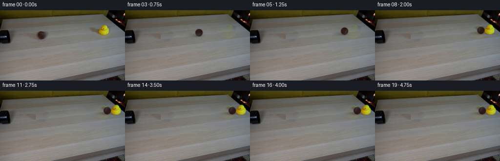

候选 01 · 2026-11-08T21:41:31.406492+00:00 · 点开播放与检查图
inspection.png

transition_check.png

代码变化
--- 上一保存版本
+++ 本次保存版本
@@ -0,0 +1,189 @@
+from pathlib import Path
+import numpy as np
+import cv2
+from PIL import Image, ImageDraw
+from scipy.ndimage import gaussian_filter
+import artifact_io
+
+ROOT=Path(__file__).resolve().parent
+W,H=256,144
+S=4
+src=np.asarray(Image.open(ROOT/'first_frame.png').convert('RGB'))
+Y,X=np.mgrid[:H,:W].astype(np.float32)
+
+def translated_texture(dx,dy):
+ return cv2.remap(src, X+dx, Y+dy,cv2.INTER_CUBIC,borderMode=cv2.BORDER_REFLECT_101)
+
+# Restore only the two occupied regions, using table grain from the same planks.
+ball_hole=np.zeros((H,W),np.uint8)
+cv2.ellipse(ball_hole,(76,51),(28,14),-5,0,360,255,-1)
+duck_hole=np.zeros((H,W),np.uint8)
+cv2.fillPoly(duck_hole,[np.array([(175,32),(200,29),(212,26),(224,29),(228,43),(225,53),(210,57),(188,49),(175,41)])],255)
+clean=src.copy()
+for hole,dx,dy in [(ball_hole,65,-7.5),(duck_hole,-57,6.6)]:
+ donor=translated_texture(dx,dy)
+ x,y,w,h=cv2.boundingRect(hole)
+ clean=cv2.seamlessClone(donor,clean,hole,(x+w//2,y+h//2),cv2.NORMAL_CLONE)
+Image.fromarray(clean).save(ROOT/'.tmp/clean.png')
+
+# A soft matte for the existing duck retains its photographic beak, eyes and molded wings.
+c=src.astype(np.float32)
+chroma=np.minimum(c[:,:,0],c[:,:,1])-c[:,:,2]
+duck_area=(X>199)&(X<226)&(Y>27)&(Y<53)
+duck_binary=((chroma>33)&duck_area).astype(np.uint8)
+# Use the measured yellow contrast to recover fractional coverage at the soft silhouette.
+inside=cv2.erode(duck_binary,np.ones((3,3),np.uint8))>0
+outside=cv2.dilate(duck_binary,np.ones((3,3),np.uint8))==0
+_,nearest=cv2.distanceTransformWithLabels((~inside).astype(np.uint8),cv2.DIST_L2,5,labelType=cv2.DIST_LABEL_PIXEL)
+# Nearest opaque colors for edge unmatting.
+coords=np.argwhere(inside)
+fg_chroma=np.zeros_like(chroma)
+if len(coords):
+ from scipy.ndimage import distance_transform_edt
+ _, inds=distance_transform_edt(~inside,return_indices=True)
+ fc=chroma[inds[0],inds[1]]
+else:
+ fc=np.full_like(chroma,120)
+bc=np.minimum(clean[:,:,0],clean[:,:,1]).astype(float)-clean[:,:,2]
+alpha=np.clip((chroma-bc)/np.maximum(fc-bc,25),0,1)
+alpha[outside]=0
+alpha[inside]=1
+alpha*=duck_area
+# preserve the dark eye and orange bill as opaque interior, not transparent holes
+alpha[cv2.erode(duck_binary,np.ones((2,2),np.uint8))>0]=1
+alpha=alpha.astype(np.float32)
+
+# Shadows are split from the subject so they stay on the horizontal table while the duck rocks.
+# The original shadow is soft, cast leftwards by light arriving from upper right.
+base=clean.astype(np.float32)
+ratio=np.mean(c/np.maximum(base,1),axis=2)
+sh_mask=np.zeros((H,W),np.float32)
+cv2.fillPoly(sh_mask,[np.array([(176,32),(196,32),(213,40),(220,49),(210,54),(193,46),(179,41)])],1)
+sh_mask=gaussian_filter(sh_mask,1.2)
+sh=(np.clip(1-ratio,0,.4)*sh_mask).astype(np.float32)
+# Subject pixels must not be embedded in the moving shadow.
+sh[cv2.dilate(duck_binary,np.ones((3,3),np.uint8))>0]=0
+# Under-foot contact shadow is regenerated separately.
+sh=gaussian_filter(sh,.5)
+background_under_duck=base*(1-sh[:,:,None])
+duck_rgb=np.clip((c-(1-alpha[:,:,None])*background_under_duck)/np.maximum(alpha[:,:,None],.02),0,255)
+duck_rgb[alpha<.015]=0
+
+# Brown ball. The surface map is sampled from the photograph; only texture turns,
+# while the contact shadow and illumination are kept in world coordinates.
+ball_c=np.array([84.7,50.6],np.float32)
+by0,by1,bx0,bx1=40,62,74,97
+ball_patch=c[by0:by1,bx0:bx1]
+
+# Scale all moving layers for subpixel sampling, leaving the rest of the frame unaltered.
+up=lambda a:cv2.resize(a,(W*S,H*S),interpolation=cv2.INTER_CUBIC)
+base_hi=up(base)
+alpha_hi=np.clip(up(alpha),0,1)
+duck_pm_hi=up(duck_rgb*alpha[:,:,None])
+shadow_hi=np.clip(up(sh),0,.4)
+
+# Image-derived ball texture smoothly extended around a spherical surface.
+N=96
+v,u=np.mgrid[0:N,0:N].astype(np.float32)
+xn=(u-(N-1)/2)/(N/2);yn=(v-(N-1)/2)/(N/2)
+z=np.sqrt(np.maximum(0,1-xn*xn-yn*yn))
+tex=cv2.remap(c,84.4+7.05*xn,50.6+7.15*yn,cv2.INTER_CUBIC,borderMode=cv2.BORDER_REFLECT_101)
+# Radius smoothly antialiased and lightly blurred as in the original exposure.
+ball_alpha=np.clip((1-np.sqrt(xn*xn+yn*yn))*N/2+.35,0,1)
+# Restrict edge colors to the surface rather than sampling table at the edge.
+rr=np.sqrt(xn*xn+yn*yn)
+mapr=np.minimum(rr,.88)/np.maximum(rr,1e-5)
+tex=cv2.remap(c,84.4+7.1*xn*mapr,50.6+7.35*yn*mapr,cv2.INTER_CUBIC,borderMode=cv2.BORDER_REFLECT_101)
+# Mild static lighting to give the ball a dimensional, unchanging silhouette.
+edge_shade=.80+.20*np.sqrt(np.maximum(0,1-np.minimum(rr,1)**2))
+tex*=edge_shade[:,:,None]
+
+
+def affine_layer(a, dx=0,dy=0, angle=0,sx=1,sy=1,pivot=(212.9,49.3)):
+ theta=np.deg2rad(angle)
+ linear=np.array([[np.cos(theta)*sx,-np.sin(theta)*sy],[np.sin(theta)*sx,np.cos(theta)*sy]],np.float32)
+ p=np.array(pivot,np.float32)*S
+ offset=p+np.array([dx,dy])*S-linear@p
+ m=np.c_[linear,offset]
+ return cv2.warpAffine(a,m,(W*S,H*S),flags=cv2.INTER_LINEAR,borderMode=cv2.BORDER_CONSTANT)
+
+def overlay_ball(canvas,x,y,scale,theta,moving):
+ # The slightly elongated shadow falls to the left, consistent with the duck.
+ yy,xx=np.mgrid[:H*S,:W*S].astype(np.float32)/S
+ shad=.18*np.exp(-.5*(((xx-(x-7.5*scale))/(9.2*scale))**2+((yy-(y+5.5*scale))/(2.6*scale))**2))
+ shad+=.22*np.exp(-.5*(((xx-(x-.6))/(4.6*scale))**2+((yy-(y+7.1*scale))/(1.2*scale))**2))
+ canvas*=1-shad[:,:,None]
+ # Rotate the photographed seam and felt in the rolling direction.
+ rm=cv2.getRotationMatrix2D(((N-1)/2,(N-1)/2),-theta,1)
+ surface=cv2.warpAffine(tex,rm,(N,N),flags=cv2.INTER_LINEAR,borderMode=cv2.BORDER_REFLECT_101)
+ rad=7.75*scale
+ k=rad*S/(N/2)
+ m=np.array([[k,0,x*S-k*(N-1)/2],[0,k,y*S-k*(N-1)/2]],np.float32)
+ a=cv2.warpAffine(ball_alpha,m,(W*S,H*S),flags=cv2.INTER_LINEAR)
+ pm=cv2.warpAffine(surface*ball_alpha[:,:,None],m,(W*S,H*S),flags=cv2.INTER_LINEAR)
+ # Optical softness and a modest exposure smear, not frame-to-frame trails.
+ sigma=(.49+.0019*moving)*S
+ a=cv2.GaussianBlur(a,(0,0),sigmaX=sigma,sigmaY=.40*S)
+ pm=cv2.GaussianBlur(pm,(0,0),sigmaX=sigma,sigmaY=.40*S)
+ canvas[:]=canvas*(1-a[:,:,None])+pm
+
+# Perspective maps the roll to a straight tabletop line from the pipe toward the duck.
+x0=84.7
+contact_x=195.4
+v0=92.0
+a_roll=8.0
+contact_t=(v0-np.sqrt(v0*v0-2*a_roll*(contact_x-x0)))/a_roll
+v_impact=v0-a_roll*contact_t
+# Momentum transfer to a lightweight rubber toy followed by dissipative sliding.
+post_speed=44.0
+post_decel=40.0
+stop_time=post_speed/post_decel
+
+def positions(t):
+ if t<contact_t:
+ x=x0+v0*t-.5*a_roll*t*t
+ return x,0,0,0,1,1,max(0,v0-a_roll*t)
+ tau=t-contact_t
+ ts=min(tau,stop_time)
+ advance=post_speed*ts-.5*post_decel*ts*ts
+ # A rapid tilt at impact, then damped rocking around the bottom of the toy.
+ rock=11.5*np.exp(-3.6*tau)*np.sin(10*tau)
+ sx=1+.04*np.exp(-8*tau)*np.sin(9*tau)
+ sy=1-.04*np.exp(-8*tau)*np.sin(9*tau)
+ return contact_x+advance,advance,-.072*advance,rock,sx,sy,max(0,post_speed-post_decel*tau)
+
+def render(t):
+ x,ddx,ddy,rock,sx,sy,speed=positions(t)
+ y=50.6-.073*(x-x0)
+ scale=1-.00018*(x-x0)
+ canvas=base_hi.copy()
+ if t<contact_t:
+ # Before impact the entire duck, including its shadow, is pixel-exact.
+ original_duck=np.where(duck_hole[:,:,None]>0,c,base)
+ region=up((duck_hole>0).astype(np.float32))
+ canvas=canvas*(1-region[:,:,None])+up(original_duck)*region[:,:,None]
+ else:
+ ds=affine_layer(shadow_hi,ddx,ddy)
+ canvas*=1-ds[:,:,None]
+ yy,xx=np.mgrid[:H*S,:W*S].astype(np.float32)/S
+ contact=.18*np.exp(-.5*(((xx-(213.0+ddx))/7.9)**2+((yy-(49.5+ddy))/1.15)**2))
+ canvas*=1-contact[:,:,None]
+ da=np.clip(affine_layer(alpha_hi,ddx,ddy,rock,sx,sy),0,1)
+ dp=affine_layer(duck_pm_hi,ddx,ddy,rock,sx,sy)
+ canvas=canvas*(1-da[:,:,None])+dp
+ # Rolling clockwise as observed by the camera; amount comes from traveled distance / radius.
+ theta=(x-x0)/7.75*180/np.pi
+ overlay_ball(canvas,x,y,scale,theta,speed)
+ out=np.clip(cv2.resize(canvas,(W,H),interpolation=cv2.INTER_AREA),0,255).astype(np.uint8)
+ # All changes remain tightly confined to the table activity region.
+ # Exact static background avoids any image resampling flicker.
+ change=(ball_hole>0)|(duck_hole>0)|((X>72)&(X<255)&(Y>22)&(Y<67))
+ out[~change]=src[~change]
+ return out
+
+frames=[src.copy()]
+for i in range(1,20):
+ frames.append(render(i/4))
+frames=np.array(frames,dtype=np.uint8)
+artifact_io.save(frames,ROOT)
+print('saved',frames.shape,'contact at',contact_t)
命令 6 · 2026-11-08T21:41:30.452088+00:00/bin/bash -lc "cat > generate.py <<'PY'
from pathlib import Path
import numpy as np
import cv2
from PIL import Image, ImageDraw
from scipy.ndimage import gaussian_filter
import artifact_io
ROOT=Path(__file__).resolve().parent
W,H=256,144
S=4
src=np.asarray(Image.open(ROOT/'first_frame.png').convert('RGB'))
Y,X=np.mgrid[:H,:W].astype(np.float32)
def translated_texture(dx,dy):
return cv2.remap(src, X+dx, Y+dy,cv2.INTER_CUBIC,borderMode=cv2.BORDER_REFLECT_101)
# Restore only the two occupied regions, using table grain from the same planks.
ball_hole=np.zeros((H,W),np.uint8)
cv2.ellipse(ball_hole,(76,51),(28,14),-5,0,360,255,-1)
duck_hole=np.zeros((H,W),np.uint8)
cv2.fillPoly(duck_hole,[np.array([(175,32),(200,29),(212,26),(224,29),(228,43),(225,53),(210,57),(188,49),(175,41)])],255)
clean=src.copy()
for hole,dx,dy in [(ball_hole,65,-7.5),(duck_hole,-57,6.6)]:
donor=translated_texture(dx,dy)
x,y,w,h=cv2.boundingRect(hole)
clean=cv2.seamlessClone(donor,clean,hole,(x+w//2,y+h//2),cv2.NORMAL_CLONE)
Image.fromarray(clean).save(ROOT/'.tmp/clean.png')
# A soft matte for the existing duck retains its photographic beak, eyes and molded wings.
c=src.astype(np.float32)
chroma=np.minimum(c[:,:,0],c[:,:,1])-c[:,:,2]
duck_area=(X>199)&(X<226)&(Y>27)&(Y<53)
duck_binary=((chroma>33)&duck_area).astype(np.uint8)
# Use the measured yellow contrast to recover fractional coverage at the soft silhouette.
inside=cv2.erode(duck_binary,np.ones((3,3),np.uint8))>0
outside=cv2.dilate(duck_binary,np.ones((3,3),np.uint8))==0
_,nearest=cv2.distanceTransformWithLabels((~inside).astype(np.uint8),cv2.DIST_L2,5,labelType=cv2.DIST_LABEL_PIXEL)
# Nearest opaque colors for edge unmatting.
coords=np.argwhere(inside)
fg_chroma=np.zeros_like(chroma)
if len(coords):
from scipy.ndimage import distance_transform_edt
_, inds=distance_transform_edt(~inside,return_indices=True)
fc=chroma[inds[0],inds[1]]
else:
fc=np.full_like(chroma,120)
bc=np.minimum(clean[:,:,0],clean[:,:,1]).astype(float)-clean[:,:,2]
alpha=np.clip((chroma-bc)/np.maximum(fc-bc,25),0,1)
alpha[outside]=0
alpha[inside]=1
alpha*=duck_area
# preserve the dark eye and orange bill as opaque interior, not transparent holes
alpha[cv2.erode(duck_binary,np.ones((2,2),np.uint8))>0]=1
alpha=alpha.astype(np.float32)
# Shadows are split from the subject so they stay on the horizontal table while the duck rocks.
# The original shadow is soft, cast leftwards by light arriving from upper right.
base=clean.astype(np.float32)
ratio=np.mean(c/np.maximum(base,1),axis=2)
sh_mask=np.zeros((H,W),np.float32)
cv2.fillPoly(sh_mask,[np.array([(176,32),(196,32),(213,40),(220,49),(210,54),(193,46),(179,41)])],1)
sh_mask=gaussian_filter(sh_mask,1.2)
sh=(np.clip(1-ratio,0,.4)*sh_mask).astype(np.float32)
# Subject pixels must not be embedded in the moving shadow.
sh[cv2.dilate(duck_binary,np.ones((3,3),np.uint8))>0]=0
# Under-foot contact shadow is regenerated separately.
sh=gaussian_filter(sh,.5)
background_under_duck=base*(1-sh[:,:,None])
duck_rgb=np.clip((c-(1-alpha[:,:,None])*background_under_duck)/np.maximum(alpha[:,:,None],.02),0,255)
duck_rgb[alpha<.015]=0
# Brown ball. The surface map is sampled from the photograph; only texture turns,
# while the contact shadow and illumination are kept in world coordinates.
ball_c=np.array([84.7,50.6],np.float32)
by0,by1,bx0,bx1=40,62,74,97
ball_patch=c[by0:by1,bx0:bx1]
# Scale all moving layers for subpixel sampling, leaving the rest of the frame unaltered.
up=lambda a:cv2.resize(a,(W*S,H*S),interpolation=cv2.INTER_CUBIC)
base_hi=up(base)
alpha_hi=np.clip(up(alpha),0,1)
duck_pm_hi=up(duck_rgb*alpha[:,:,None])
shadow_hi=np.clip(up(sh),0,.4)
# Image-derived ball texture smoothly extended around a spherical surface.
N=96
v,u=np.mgrid[0:N,0:N].astype(np.float32)
xn=(u-(N-1)/2)/(N/2);yn=(v-(N-1)/2)/(N/2)
z=np.sqrt(np.maximum(0,1-xn*xn-yn*yn))
tex=cv2.remap(c,84.4+7.05*xn,50.6+7.15*yn,cv2.INTER_CUBIC,borderMode=cv2.BORDER_REFLECT_101)
# Radius smoothly antialiased and lightly blurred as in the original exposure.
ball_alpha=np.clip((1-np.sqrt(xn*xn+yn*yn))*N/2+.35,0,1)
# Restrict edge colors to the surface rather than sampling table at the edge.
rr=np.sqrt(xn*xn+yn*yn)
mapr=np.minimum(rr,.88)/np.maximum(rr,1e-5)
tex=cv2.remap(c,84.4+7.1*xn*mapr,50.6+7.35*yn*mapr,cv2.INTER_CUBIC,borderMode=cv2.BORDER_REFLECT_101)
# Mild static lighting to give the ball a dimensional, unchanging silhouette.
edge_shade=.80+.20*np.sqrt(np.maximum(0,1-np.minimum(rr,1)**2))
tex*=edge_shade[:,:,None]
def affine_layer(a, dx=0,dy=0, angle=0,sx=1,sy=1,pivot=(212.9,49.3)):
theta=np.deg2rad(angle)
linear=np.array([[np.cos(theta)*sx,-np.sin(theta)*sy],[np.sin(theta)*sx,np.cos(theta)*sy]],np.float32)
p=np.array(pivot,np.float32)*S
offset=p+np.array([dx,dy])*S-linear@p
m=np.c_[linear,offset]
return cv2.warpAffine(a,m,(W*S,H*S),flags=cv2.INTER_LINEAR,borderMode=cv2.BORDER_CONSTANT)
def overlay_ball(canvas,x,y,scale,theta,moving):
# The slightly elongated shadow falls to the left, consistent with the duck.
yy,xx=np.mgrid[:H*S,:W*S].astype(np.float32)/S
shad=.18*np.exp(-.5*(((xx-(x-7.5*scale))/(9.2*scale))**2+((yy-(y+5.5*scale))/(2.6*scale))**2))
shad+=.22*np.exp(-.5*(((xx-(x-.6))/(4.6*scale))**2+((yy-(y+7.1*scale))/(1.2*scale))**2))
canvas*=1-shad[:,:,None]
# Rotate the photographed seam and felt in the rolling direction.
rm=cv2.getRotationMatrix2D(((N-1)/2,(N-1)/2),-theta,1)
surface=cv2.warpAffine(tex,rm,(N,N),flags=cv2.INTER_LINEAR,borderMode=cv2.BORDER_REFLECT_101)
rad=7.75*scale
k=rad*S/(N/2)
m=np.array([[k,0,x*S-k*(N-1)/2],[0,k,y*S-k*(N-1)/2]],np.float32)
a=cv2.warpAffine(ball_alpha,m,(W*S,H*S),flags=cv2.INTER_LINEAR)
pm=cv2.warpAffine(surface*ball_alpha[:,:,None],m,(W*S,H*S),flags=cv2.INTER_LINEAR)
# Optical softness and a modest exposure smear, not frame-to-frame trails.
sigma=(.49+.0019*moving)*S
a=cv2.GaussianBlur(a,(0,0),sigmaX=sigma,sigmaY=.40*S)
pm=cv2.GaussianBlur(pm,(0,0),sigmaX=sigma,sigmaY=.40*S)
canvas[:]=canvas*(1-a[:,:,None])+pm
# Perspective maps the roll to a straight tabletop line from the pipe toward the duck.
x0=84.7
contact_x=195.4
v0=92.0
a_roll=8.0
contact_t=(v0-np.sqrt(v0*v0-2*a_roll*(contact_x-x0)))/a_roll
v_impact=v0-a_roll*contact_t
# Momentum transfer to a lightweight rubber toy followed by dissipative sliding.
post_speed=44.0
post_decel=40.0
stop_time=post_speed/post_decel
def positions(t):
if t<contact_t:
x=x0+v0*t-.5*a_roll*t*t
return x,0,0,0,1,1,max(0,v0-a_roll*t)
tau=t-contact_t
ts=min(tau,stop_time)
advance=post_speed*ts-.5*post_decel*ts*ts
# A rapid tilt at impact, then damped rocking around the bottom of the toy.
rock=11.5*np.exp(-3.6*tau)*np.sin(10*tau)
sx=1+.04*np.exp(-8*tau)*np.sin(9*tau)
sy=1-.04*np.exp(-8*tau)*np.sin(9*tau)
return contact_x+advance,advance,-.072*advance,rock,sx,sy,max(0,post_speed-post_decel*tau)
def render(t):
x,ddx,ddy,rock,sx,sy,speed=positions(t)
y=50.6-.073*(x-x0)
scale=1-.00018*(x-x0)
canvas=base_hi.copy()
if t<contact_t:
# Before impact the entire duck, including its shadow, is pixel-exact.
original_duck=np.where(duck_hole[:,:,None]>0,c,base)
region=up((duck_hole>0).astype(np.float32))
canvas=canvas*(1-region[:,:,None])+up(original_duck)*region[:,:,None]
else:
ds=affine_layer(shadow_hi,ddx,ddy)
canvas*=1-ds[:,:,None]
yy,xx=np.mgrid[:H*S,:W*S].astype(np.float32)/S
contact=.18*np.exp(-.5*(((xx-(213.0+ddx))/7.9)**2+((yy-(49.5+ddy))/1.15)**2))
canvas*=1-contact[:,:,None]
da=np.clip(affine_layer(alpha_hi,ddx,ddy,rock,sx,sy),0,1)
dp=affine_layer(duck_pm_hi,ddx,ddy,rock,sx,sy)
canvas=canvas*(1-da[:,:,None])+dp
# Rolling clockwise as observed by the camera; amount comes from traveled distance / radius.
theta=(x-x0)/7.75*180/np.pi
overlay_ball(canvas,x,y,scale,theta,speed)
out=np.clip(cv2.resize(canvas,(W,H),interpolation=cv2.INTER_AREA),0,255).astype(np.uint8)
# All changes remain tightly confined to the table activity region.
# Exact static background avoids any image resampling flicker.
change=(ball_hole>0)|(duck_hole>0)|((X>72)&(X<255)&(Y>22)&(Y<67))
out[~change]=src[~change]
return out
frames=[src.copy()]
for i in range(1,20):
frames.append(render(i/4))
frames=np.array(frames,dtype=np.uint8)
artifact_io.save(frames,ROOT)
print('saved',frames.shape,'contact at',contact_t)
PY
python generate.py"exit 0 命令 8 · 2026-11-08T21:45:22.072613+00:00/bin/bash -lc "python - <<'PY'
p='generate.py'
s=open(p).read().replace(\"cv2.fillPoly(duck_hole,[np.array([(175,32),(200,29),(212,26),(224,29),(228,43),(225,53),(210,57),(188,49),(175,41)])],255)\",\"cv2.fillPoly(duck_hole,[np.array([(171,29),(199,25),(216,24),(227,28),(230,44),(227,56),(209,59),(187,50),(171,41)])],255)\")
a=s.index('clean=src.copy()')
b=s.index(\"Image.fromarray(clean)\",a)
s=s[:a]+'''clean=src.copy()
for hole,dx,dy in [(ball_hole,65,-7.5),(duck_hole,-57,6.6)]:
donor=translated_texture(dx,dy).astype(np.float32)
outer=cv2.dilate(hole,np.ones((7,7),np.uint8))>0
ring=outer & (hole==0)
# Low-order local illumination correction, without copying any foreground.
xx=(X-X[hole>0].mean())/30
yy=(Y-Y[hole>0].mean())/20
design=np.stack([np.ones_like(X),xx,yy],axis=-1)
coefs=np.linalg.lstsq(design[ring],src.astype(float)[ring]-donor[ring],rcond=None)[0]
donor+=np.clip(design@coefs,-20,20)
feather=gaussian_filter((hole>0).astype(np.float32),1.25)
clean=np.clip(clean*(1-feather[:,:,None])+donor*feather[:,:,None],0,255).astype(np.uint8)
''' + s[b:]
# original duck use src exact where mask, not filtered
s=s.replace(\" out[~change]=src[~change]\\n return out\", \" out[~change]=src[~change]\\n if t<contact_t:\\n stationary=(duck_hole>0)&(X>x+11)\\n out[stationary]=src[stationary]\\n return out\")
open(p,'w').write(s)
PY
python generate.py"exit 0